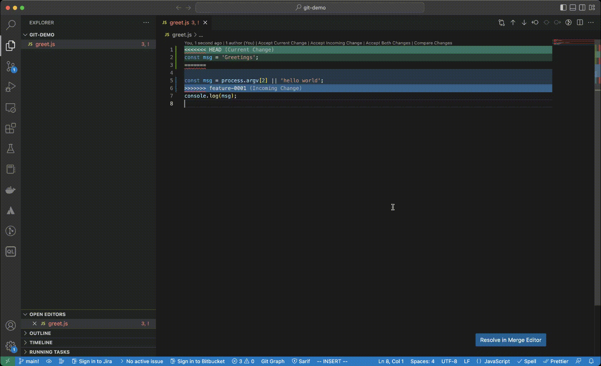

git operations
- Refer git chapter before starting this.
Topics
init
~/git-playground [master] >cd
~ >mkdir git-demo
~ >cd git-demo
~/git-demo >ls
~/git-demo >git init .
hint: Using 'master' as the name for the initial branch. This default branch name
hint: is subject to change. To configure the initial branch name to use in all
hint: of your new repositories, which will suppress this warning, call:
hint:
hint: git config --global init.defaultBranch <name>
hint:
hint: Names commonly chosen instead of 'master' are 'main', 'trunk' and
hint: 'development'. The just-created branch can be renamed via this command:
hint:
hint: git branch -m <name>
Initialized empty Git repository in /Users/mchinnappan/git-demo/.git/
~/git-demo [master] >git config --global init.defaultBranch
~/git-demo [master] >git config --global init.defaultBranch main
~/git-demo [master] >git branch -m main
~/git-demo [main] >code .
~/git-demo [main] >git status
On branch main
No commits yet
Untracked files:
(use "git add <file>..." to include in what will be committed)
greet.js
nothing added to commit but untracked files present (use "git add" to track)
stage
~/git-demo [main] >git add greet.js
status
~/git-demo [main] >git status
On branch main
No commits yet
Changes to be committed:
(use "git rm --cached <file>..." to unstage)
new file: greet.js
commit
~/git-demo [main] >git commit -m 'init'
[main (root-commit) 6738865] init
1 file changed, 2 insertions(+)
create mode 100644 greet.js
~/git-demo [main] >git status
On branch main
nothing to commit, working tree clean
logs
git log
commit 6738865ba8b8549b62b9fbadf4b4041ac891e36e (HEAD -> main)
Author: mohan-chinnappan-n <mohan.chinnappan.n@gmail.com>
Date: Fri Feb 3 07:27:03 2023 -0500
init
~/git-demo [main] >git lg
* 6738865 - (12 seconds ago) init - mohan-chinnappan-n (HEAD -> main)
~/git-demo [main] >
branch
~/git-demo [main] >git branch feature-0001
``
~/git-demo [main] >git branch feature-0001
- main
~/git-demo [main] >git checkout feature-0001 Switched to branch 'feature-0001'
~/git-demo [feature-0001] >git lg
* 6738865 - (24 minutes ago) init - mohan-chinnappan-n (HEAD -> feature-0001, main)
~/git-demo [feature-0001] >git branch
* feature-0001
main
work in feature-0001 branch
~/git-demo [feature-0001] >vi greet.js
~/git-demo [feature-0001] >cat greet.js
const msg = 'hello world';
console.log(msg);
~/git-demo [feature-0001] >node greet.js
hello world
commit the changes
~/git-demo [feature-0001] >git add greet.js
~/git-demo [feature-0001] >git commit -m 'msg updated'
[feature-0001 4f8fbaa] msg updated
1 file changed, 3 insertions(+), 2 deletions(-)
~/git-demo [feature-0001] >git lg
* 4f8fbaa - (9 seconds ago) msg updated - mohan-chinnappan-n (HEAD -> feature-0001)
* 6738865 - (25 minutes ago) init - mohan-chinnappan-n (main)
Keep working on feature-0001
~/git-demo [feature-0001] >vi greet.js
~/git-demo [feature-0001] >cat greet.js
const msg = process.argv[2] || 'hello world';
console.log(msg);
~/git-demo [feature-0001] >node greet.js HelloWorld
HelloWorld
~/git-demo [feature-0001] >node greet.js
hello world
/git-demo [feature-0001] >git add greet.js
~/git-demo [feature-0001] >git commit -m 'added msg from commandline param'
[feature-0001 6aff16d] added msg from commandline param
1 file changed, 1 insertion(+), 1 deletion(-)
logs
~/git-demo [feature-0001] >git lg2
* 6aff16d - Fri, 3 Feb 2023 07:57:30 -0500 (69 seconds ago) (HEAD -> feature-0001)
| added msg from commandline param - mohan-chinnappan-n
* 4f8fbaa - Fri, 3 Feb 2023 07:52:23 -0500 (6 minutes ago)
| msg updated - mohan-chinnappan-n
* 6738865 - Fri, 3 Feb 2023 07:27:03 -0500 (32 minutes ago) (main)
init - mohan-chinnappan-n
switch back to main and make few updates and commit
~/git-demo [feature-0001] >git checkout main
Switched to branch 'main'
~/git-demo [main] >vi greet.js
~/git-demo [main] >cat greet.js
const msg = 'Greetings';
console.log(msg);
~/git-demo [main] >node greet.js
Greetings
~/git-demo [feature-0001] >git checkout main
Switched to branch 'main'
~/git-demo [main] >vi greet.js
~/git-demo [main] >cat greet.js
const msg = 'Greetings';
console.log(msg);
~/git-demo [main] >node greet.js
Greetings
~/git-demo [main] >git add greet.js
~/git-demo [main] >git commit -m 'msg is changed'
[main 972c964] msg is changed
1 file changed, 2 insertions(+), 2 deletions(-)
~/git-demo [main] >git lg2
* 972c964 - Fri, 3 Feb 2023 08:00:54 -0500 (6 seconds ago) (HEAD -> main)
| msg is changed - mohan-chinnappan-n
| * 6aff16d - Fri, 3 Feb 2023 07:57:30 -0500 (4 minutes ago) (feature-0001)
| | added msg from commandline param - mohan-chinnappan-n
| * 4f8fbaa - Fri, 3 Feb 2023 07:52:23 -0500 (9 minutes ago)
|/ msg updated - mohan-chinnappan-n
* 6738865 - Fri, 3 Feb 2023 07:27:03 -0500 (34 minutes ago)
init - mohan-chinnappan-n
let us merge feature-001 with main to the conflicts
~/git-demo [main] >git merge feature-0001
Auto-merging greet.js
CONFLICT (content): Merge conflict in greet.js
Automatic merge failed; fix conflicts and then commit the result.
use merge editor in VSCode to resolve the conflicts

~/git-demo (git)-[main|merge]- >git status
On branch main
All conflicts fixed but you are still merging.
(use "git commit" to conclude merge)
Changes to be committed:
modified: greet.js
~/git-demo (git)-[main|merge]- >git add greet.js
~/git-demo (git)-[main|merge]- >git commit -m 'merged with feature-0001'
[main 50fa27f] merged with feature-0001
~/git-demo [main] >git lg2
* 50fa27f - Fri, 3 Feb 2023 08:09:16 -0500 (6 seconds ago) (HEAD -> main)
|\ merged with feature-0001 - mohan-chinnappan-n
| * 6aff16d - Fri, 3 Feb 2023 07:57:30 -0500 (12 minutes ago) (feature-0001)
| | added msg from commandline param - mohan-chinnappan-n
| * 4f8fbaa - Fri, 3 Feb 2023 07:52:23 -0500 (17 minutes ago)
| | msg updated - mohan-chinnappan-n
* | 972c964 - Fri, 3 Feb 2023 08:00:54 -0500 (8 minutes ago)
|/ msg is changed - mohan-chinnappan-n
* 6738865 - Fri, 3 Feb 2023 07:27:03 -0500 (42 minutes ago)
init - mohan-chinnappan-n
~/git-demo [main] >cat greet.js
const msg = process.argv[2] || 'hello world';
console.log(msg);
Some more update on feature-0001
git checkout feature-0001
M greet.js
Switched to branch 'feature-0001'
~/git-demo [main] >vi greet.js
~/git-demo [main] >vi greet.js
~/git-demo [main] >node greet.js
hello world
30
~/git-demo [main] >cat greet.js
const msg = process.argv[2] || 'hello world';
console.log(msg);
const add = (a,b) => a+b;
console.log(add(10,20));
~/git-demo [feature-0001] >git status
On branch feature-0001
Changes not staged for commit:
(use "git add <file>..." to update what will be committed)
(use "git restore <file>..." to discard changes in working directory)
modified: greet.js
no changes added to commit (use "git add" and/or "git commit -a")
~/git-demo [feature-0001] >git add greet.js
~/git-demo [feature-0001] >git commit -m 'add function added'
[feature-0001 af3e5f4] add function added
1 file changed, 3 insertions(+)
~/git-demo [feature-0001] >git lg3
* af3e5f4 - Sat, 4 Feb 2023 04:40:59 -0500 (4 seconds ago) (committed: Sat, 4 Feb 2023 04:40:59 -0500) (HEAD -> feature-0001)
| add function added
| - mohan-chinnappan-n <mohan.chinnappan.n@gmail.com> (committer: mohan-chinnappan-n <mohan.chinnappan.n@gmail.com>)
| * 50fa27f - Fri, 3 Feb 2023 08:09:16 -0500 (21 hours ago) (committed: Fri, 3 Feb 2023 08:09:16 -0500) (main)
| |\ merged with feature-0001
| |/ - mohan-chinnappan-n <mohan.chinnappan.n@gmail.com> (committer: mohan-chinnappan-n <mohan.chinnappan.n@gmail.com>)
|/|
* | 6aff16d - Fri, 3 Feb 2023 07:57:30 -0500 (21 hours ago) (committed: Fri, 3 Feb 2023 07:57:30 -0500)
| | added msg from commandline param
| | - mohan-chinnappan-n <mohan.chinnappan.n@gmail.com> (committer: mohan-chinnappan-n <mohan.chinnappan.n@gmail.com>)
* | 4f8fbaa - Fri, 3 Feb 2023 07:52:23 -0500 (21 hours ago) (committed: Fri, 3 Feb 2023 07:52:23 -0500)
| | msg updated
| | - mohan-chinnappan-n <mohan.chinnappan.n@gmail.com> (committer: mohan-chinnappan-n <mohan.chinnappan.n@gmail.com>)
| * 972c964 - Fri, 3 Feb 2023 08:00:54 -0500 (21 hours ago) (committed: Fri, 3 Feb 2023 08:00:54 -0500)
|/ msg is changed
| - mohan-chinnappan-n <mohan.chinnappan.n@gmail.com> (committer: mohan-chinnappan-n <mohan.chinnappan.n@gmail.com>)
* 6738865 - Fri, 3 Feb 2023 07:27:03 -0500 (21 hours ago) (committed: Fri, 3 Feb 2023 07:27:03 -0500)
init
- mohan-chinnappan-n <mohan.chinnappan.n@gmail.com> (committer: mohan-chinnappan-n <mohan.chinnappan.n@gmail.com>)
~/git-demo [feature-0001] >vi greet.js
~/git-demo [feature-0001] >node greet.js
hello world
30
200
~/git-demo [feature-0001] >cat greet.js
const msg = process.argv[2] || 'hello world';
console.log(msg);
const add = (a,b) => a+b;
console.log(add(10,20));
const mul = (a,b) => a*b;
console.log(mul(10,20));
~/git-demo [feature-0001] >git add greet.js
~/git-demo [feature-0001] >git commit -m 'mul function added'
[feature-0001 d99c263] mul function added
1 file changed, 3 insertions(+)
~/git-demo [feature-0001] >git lg
* d99c263 - (36 seconds ago) mul function added - mohan-chinnappan-n (HEAD -> feature-0001)
* af3e5f4 - (3 minutes ago) add function added - mohan-chinnappan-n
| * 50fa27f - (21 hours ago) merged with feature-0001 - mohan-chinnappan-n (main)
| |\
| |/
|/|
* | 6aff16d - (21 hours ago) added msg from commandline param - mohan-chinnappan-n
* | 4f8fbaa - (21 hours ago) msg updated - mohan-chinnappan-n
| * 972c964 - (21 hours ago) msg is changed - mohan-chinnappan-n
|/
* 6738865 - (21 hours ago) init - mohan-chinnappan-n
~/git-demo [feature-0001] >git lg2
* d99c263 - Sat, 4 Feb 2023 04:43:06 -0500 (43 seconds ago) (HEAD -> feature-0001)
| mul function added - mohan-chinnappan-n
* af3e5f4 - Sat, 4 Feb 2023 04:40:59 -0500 (3 minutes ago)
| add function added - mohan-chinnappan-n
| * 50fa27f - Fri, 3 Feb 2023 08:09:16 -0500 (21 hours ago) (main)
| |\ merged with feature-0001 - mohan-chinnappan-n
| |/
|/|
* | 6aff16d - Fri, 3 Feb 2023 07:57:30 -0500 (21 hours ago)
| | added msg from commandline param - mohan-chinnappan-n
* | 4f8fbaa - Fri, 3 Feb 2023 07:52:23 -0500 (21 hours ago)
| | msg updated - mohan-chinnappan-n
| * 972c964 - Fri, 3 Feb 2023 08:00:54 -0500 (21 hours ago)
|/ msg is changed - mohan-chinnappan-n
* 6738865 - Fri, 3 Feb 2023 07:27:03 -0500 (21 hours ago)
init - mohan-chinnappan-n
~/git-demo [feature-0001] >git log --pretty='format:%h|%an|%ae|%s'
d99c263|mohan-chinnappan-n|mohan.chinnappan.n@gmail.com|mul function added
af3e5f4|mohan-chinnappan-n|mohan.chinnappan.n@gmail.com|add function added
6aff16d|mohan-chinnappan-n|mohan.chinnappan.n@gmail.com|added msg from commandline param
4f8fbaa|mohan-chinnappan-n|mohan.chinnappan.n@gmail.com|msg updated
6738865|mohan-chinnappan-n|mohan.chinnappan.n@gmail.com|init
cherry-pick af3e5f4 into main
~/git-demo [feature-0001] >cat greet.js
const msg = process.argv[2] || 'hello world';
console.log(msg);
const add = (a,b) => a+b;
console.log(add(10,20));
const mul = (a,b) => a*b;
console.log(mul(10,20));
~/git-demo [feature-0001] >git checkout main
Switched to branch 'main'
~/git-demo [main] >cat greet.js
const msg = process.argv[2] || 'hello world';
console.log(msg);
~/git-demo [main] >git cherry-pick af3e5f4
[main befe251] add function added
Date: Sat Feb 4 04:40:59 2023 -0500
1 file changed, 3 insertions(+)
~/git-demo [main] >cat greet.js
const msg = process.argv[2] || 'hello world';
console.log(msg);
const add = (a,b) => a+b;
console.log(add(10,20));
~/git-demo [main] >node greet.js
hello world
30
~/git-demo [main] >git lg2
* befe251 - Sat, 4 Feb 2023 04:40:59 -0500 (10 minutes ago) (HEAD -> main)
| add function added - mohan-chinnappan-n
* 50fa27f - Fri, 3 Feb 2023 08:09:16 -0500 (21 hours ago)
|\ merged with feature-0001 - mohan-chinnappan-n
* | 972c964 - Fri, 3 Feb 2023 08:00:54 -0500 (21 hours ago)
| | msg is changed - mohan-chinnappan-n
| | * d99c263 - Sat, 4 Feb 2023 04:43:06 -0500 (7 minutes ago) (feature-0001)
| | | mul function added - mohan-chinnappan-n
| | * af3e5f4 - Sat, 4 Feb 2023 04:40:59 -0500 (10 minutes ago)<---------- cheery-pick
| |/ add function added - mohan-chinnappan-n
| * 6aff16d - Fri, 3 Feb 2023 07:57:30 -0500 (21 hours ago)
| | added msg from commandline param - mohan-chinnappan-n
| * 4f8fbaa - Fri, 3 Feb 2023 07:52:23 -0500 (21 hours ago)
|/ msg updated - mohan-chinnappan-n
* 6738865 - Fri, 3 Feb 2023 07:27:03 -0500 (21 hours ago)
init - mohan-chinnappan-n